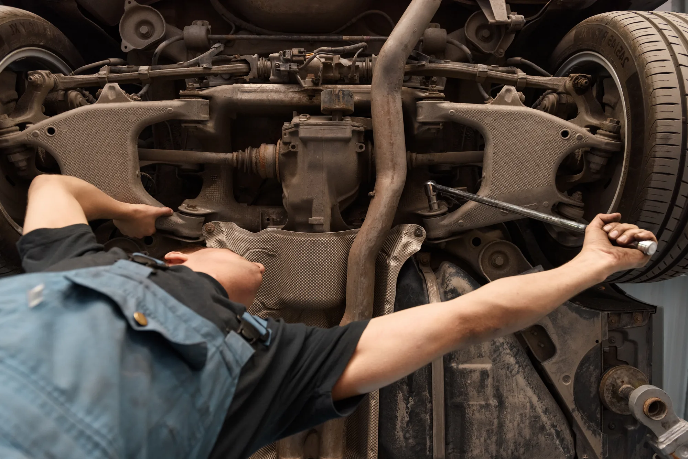

Independent of industry and political tribe. We’re pioneering the solutions, building the political will, and co-creating the public vision that AI transformation demands.
We ask the hard questions and stay in the room for the answer. Working at the frontier and bringing the rest of the room along.
We work with ambitious policymakers and leaders across the ideological spectrum.
We give them the best ideas that meet the moment.
New and ambitious ideas are born from rigorous research and development.
We work with partners to design, execute, evaluate and refine bold solutions.
Right now, the people building AI are defining what comes next. We think those who will live with it should too. Too often, the conversation around AI and work strips people of choice.
We believe everyone should have agency in shaping the future and we are building a sustained public engagement program to ensure that they do.
As AI absorbs the entry-level tasks people once used to break into a career, we risk pulling the ladder up before an entire generation can climb it. We’re inventing bold policy ideas and testing new approaches on the ground to keep the first rung of the career ladder in reach.
Administrative and back office jobs have long been one of the best paths to the middle class for those without a college degree. These jobs are the factory floor of today’s economy and they are disappearing without headlines. We’re running a policy sprint to track this invisible disruption and build the policies that make sure these workers and their families aren’t left behind.
The number of good jobs isn’t fixed. AI’s productivity boom should create opportunity, not just profits for the few. We’re designing and piloting moonshots for the jobs of the future, from a modern Apollo program for work to locally driven community jobs.
Policy takes time. If we don’t act now, we will miss the window of opportunity. To invest, collaborate or find out more, get in touch.
Contact us